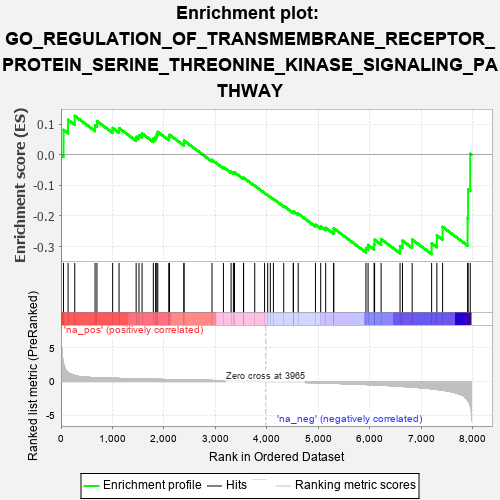

| | | Dataset | 7d |
| Phenotype | NoPhenotypeAvailable |
| Upregulated in class | na_neg |
| GeneSet | GO_REGULATION_OF_TRANSMEMBRANE_RECEPTOR_PROTEIN_SERINE_THREONINE_KINASE_SIGNALING_PATHWAY |
| Enrichment Score (ES) | -0.3248858 |
| Normalized Enrichment Score (NES) | -0.968134 |
| Nominal p-value | 0.5204327 |
| FDR q-value | 0.9051117 |
| FWER p-Value | 1.0 |
Table: GSEA Results Summary

Fig 1: Enrichment plot: GO_REGULATION_OF_TRANSMEMBRANE_RECEPTOR_PROTEIN_SERINE_THREONINE_KINASE_SIGNALING_PATHWAY
Profile of the Running ES Score & Positions of GeneSet Members on the Rank Ordered List
| PROBE | GENE SYMBOL | GENE_TITLE | RANK IN GENE LIST | RANK METRIC SCORE | RUNNING ES | CORE ENRICHMENT | | 1 | TGFB3 | | | 49 | 2.654 | 0.0812 | No |
| 2 | HTRA4 | | | 137 | 1.341 | 0.1143 | No |
| 3 | TBX20 | | | 267 | 0.880 | 0.1270 | No |
| 4 | HES5 | | | 661 | 0.571 | 0.0962 | No |
| 5 | FST | | | 698 | 0.560 | 0.1100 | No |
| 6 | MEN1 | | | 1003 | 0.483 | 0.0875 | No |
| 7 | NUP93 | | | 1127 | 0.459 | 0.0871 | No |
| 8 | VASN | | | 1459 | 0.398 | 0.0584 | No |
| 9 | INHBB | | | 1514 | 0.388 | 0.0644 | No |
| 10 | FZD1 | | | 1574 | 0.379 | 0.0694 | No |
| 11 | STRAP | | | 1793 | 0.339 | 0.0530 | No |
| 12 | GATA4 | | | 1837 | 0.330 | 0.0584 | No |
| 13 | SMAD4 | | | 1860 | 0.326 | 0.0664 | No |
| 14 | NEO1 | | | 1879 | 0.323 | 0.0747 | No |
| 15 | FOXD1 | | | 2093 | 0.292 | 0.0574 | No |
| 16 | BMP7 | | | 2107 | 0.290 | 0.0653 | No |
| 17 | PELO | | | 2386 | 0.247 | 0.0384 | No |
| 18 | HIPK2 | | | 2389 | 0.247 | 0.0462 | No |
| 19 | ACVR1 | | | 2932 | 0.161 | -0.0169 | No |
| 20 | SFRP5 | | | 3154 | 0.129 | -0.0406 | No |
| 21 | SMAD3 | | | 3303 | 0.105 | -0.0558 | No |
| 22 | UBE2O | | | 3348 | 0.097 | -0.0582 | No |
| 23 | SMAD7 | | | 3369 | 0.093 | -0.0576 | No |
| 24 | PIN1 | | | 3543 | 0.069 | -0.0772 | No |
| 25 | DMRT1 | | | 3546 | 0.068 | -0.0752 | No |
| 26 | SKI | | | 3762 | 0.032 | -0.1013 | No |
| 27 | PPM1A | | | 3953 | 0.002 | -0.1252 | No |
| 28 | PARP1 | | | 4014 | -0.010 | -0.1325 | No |
| 29 | SFRP2 | | | 4065 | -0.018 | -0.1382 | No |
| 30 | ABL1 | | | 4125 | -0.027 | -0.1447 | No |
| 31 | CD109 | | | 4325 | -0.064 | -0.1678 | No |
| 32 | ILK | | | 4510 | -0.096 | -0.1878 | No |
| 33 | SNW1 | | | 4514 | -0.096 | -0.1850 | No |
| 34 | SNX25 | | | 4606 | -0.119 | -0.1926 | No |
| 35 | EP300 | | | 4941 | -0.186 | -0.2287 | No |
| 36 | PDPK1 | | | 5043 | -0.207 | -0.2346 | No |
| 37 | FLCN | | | 5140 | -0.235 | -0.2390 | No |
| 38 | MAGI2 | | | 5295 | -0.269 | -0.2496 | No |
| 39 | FKBP8 | | | 5296 | -0.270 | -0.2407 | No |
| 40 | STK11 | | | 5922 | -0.443 | -0.3050 | Yes |
| 41 | SH2B1 | | | 5963 | -0.459 | -0.2950 | Yes |
| 42 | FBN1 | | | 6080 | -0.499 | -0.2932 | Yes |
| 43 | UBB | | | 6090 | -0.503 | -0.2778 | Yes |
| 44 | SMAD2 | | | 6216 | -0.541 | -0.2758 | Yes |
| 45 | INHBE | | | 6584 | -0.701 | -0.2990 | Yes |
| 46 | WWTR1 | | | 6631 | -0.729 | -0.2809 | Yes |
| 47 | GIPC1 | | | 6819 | -0.826 | -0.2773 | Yes |
| 48 | OVOL2 | | | 7197 | -1.068 | -0.2897 | Yes |
| 49 | MSX2 | | | 7299 | -1.171 | -0.2639 | Yes |
| 50 | UBC | | | 7410 | -1.274 | -0.2359 | Yes |
| 51 | CAV3 | | | 7896 | -2.739 | -0.2070 | Yes |
| 52 | FBN2 | | | 7906 | -2.873 | -0.1136 | Yes |
| 53 | XIAP | | | 7947 | -3.696 | 0.0030 | Yes |
Table: GSEA details [plain text format]
Fig 2: GO_REGULATION_OF_TRANSMEMBRANE_RECEPTOR_PROTEIN_SERINE_THREONINE_KINASE_SIGNALING_PATHWAY: Random ES distribution
Gene set null distribution of ES for GO_REGULATION_OF_TRANSMEMBRANE_RECEPTOR_PROTEIN_SERINE_THREONINE_KINASE_SIGNALING_PATHWAY